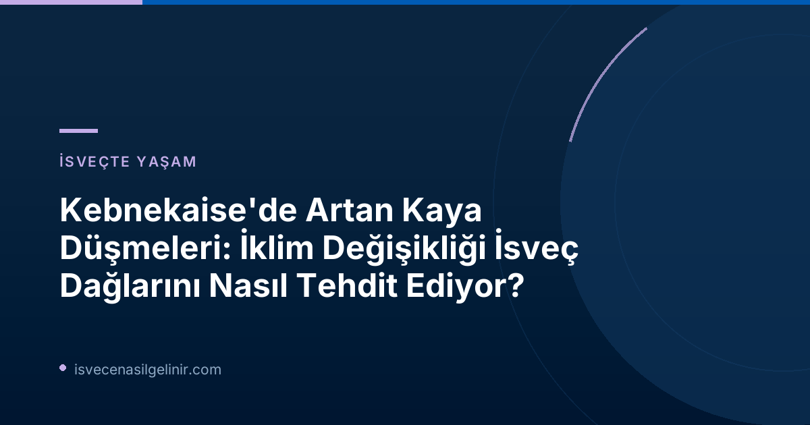

İsveç'in en yüksek dağı Kebnekaise'de yaşanan son gelişmeler, iklim değişikliğinin çevremiz üzerindeki yıkıcı etkilerini bir kez daha gözler önüne seriyor. SVT Nyheter Inrikes'in bildirdiğine göre, bölgedeki dağ rehberleri, artan kaya düşmeleri nedeniyle 'kendilerini kayaların arkasına saklamak' zorunda kaldıklarını belirtiyor.
Artan Kaya Düşmeleri: Bir Tehlike Çanı
Kuzey Kutbu'na yakın bölgelerde, sıcaklıkların yükselmesiyle birlikte dağlık alanlarda meydana gelen değişimler hız kazanıyor. Kebnekaise çevresinde, özellikle donmuş zemin (permafrost) tabakasının erimesiyle birlikte kaya düşmeleri tehlikesi önemli ölçüde arttı. Bölgede 1994 yılından bu yana 259 kez Kebnekaise zirvesine tırmanan kıdemli dağ rehberi Martin Lundberg, durumun ciddiyetini şu sözlerle açıklıyor:
“Kaya düşmeleri olduğunda, düşmeler bitene kadar kayaların arkasına saklanmak zorunda kalıyoruz ve sonra bir siperden çıkar gibi dikkatlice yukarı doğru hareket ediyoruz. Birkaç kez oldukça yakındı.”
Bu ifadeler, dağcılık tutkunları için bu eşsiz doğa harikasının ne kadar riskli bir hale geldiğini net bir şekilde ortaya koyuyor.
Permafrost Eriyor, Zirveler Kırılganlaşıyor
Kebnekaise'nin gölgesinde, 1.135 metre yükseklikte bulunan Tarfala Araştırma İstasyonu'nda çalışmalarını sürdüren glasiolog ve istasyon şefi Nina Kirchner, iklim değişikliğinin etkilerini bilimsel verilerle destekliyor. Kirchner'e göre, İsveç'in en büyük buzulları rekor hızda eriyor:
“Artık farkı görmek, bir şeyin değiştiğini görmek için yüz yıllık fotoğraflara geri dönmenize gerek yok. Bunu sürekli görüyoruz.”
Sıcaklık artışları sadece buzulları eritmekle kalmıyor, aynı zamanda toprağı bir arada tutan permafrostun da çözülmesine neden oluyor. Kirchner bu durumu "tuhaf bir süreçler kokteyli" olarak tanımlıyor:
“Eğer üzerine şiddetli yağış da eklenirse, bu, kaya düşmelerinin daha sık olmasına, daha büyük kaya düşmelerine ve daha önce hiç yaşanmadığı yerlerde bile kaya düşmelerine yol açan oldukça tuhaf bir süreçler kokteyli haline geliyor. Küresel ısınma ile birlikte birçok süreç aynı anda güçleniyor.”
Kebnekaise Hakkında Bilgiler
- İsveç'in En Yüksek Dağı: Güney zirvesi yaklaşık 2.097 metre (eriyen buzul nedeniyle yükseklik değişebilmektedir).
- Konum: İsveç Alpleri olarak bilinen Kuzey İsveç'teki Kiruna belediyesi.
- Araştırma İstasyonu: Tarfala Araştırma İstasyonu, glasiyolojik araştırmalarına ev sahipliği yapıyor.
- Doğu Rotası: Kaya düşmeleri ve buzul çatlakları nedeniyle geçici olarak rehberli turlara kapalı.
İsveç'te sadece dağcılık değil, aynı zamanda vatandaşlık süreçleri gibi konularda da güncel ve doğru bilgiye ulaşmak önemlidir. İsveç Vatandaşlık Sınavı hakkında detaylı bilgi için sitemizi ziyaret edebilirsiniz.
Doğu Rotası Neden Kapalı?
Kebnekaise zirvesine çıkan iki ana rotadan biri olan ve daha kısa mesafeli Doğu Rotası, son iki yıldır İsveç Turist Derneği (STF) tarafından rehberli turlara kapatılmış durumda. Kebnekaise Dağ İstasyonu'nun vekaleten spor şefi Anna Östberg, bu kararın alınmasındaki en önemli faktörlerden birinin artan kaya düşmeleri, buzul çatlakları ve değişen kar koşulları olduğunu ifade ediyor:
“Şu anda batı rotasına rehberlik ediyoruz ve doğu rotasındaki rehberlik hizmetlerini durdurduk. Bunun faktörlerinden biri de artan kaya düşmeleri.”
Bu karar, bölgedeki dağcılık faaliyetlerinin ne denli etkilendiğinin somut bir göstergesi olarak öne çıkıyor.
İklim Değişikliğinin İsveç Dağlarına Etkileri
Kebnekaise'deki durum, İsveç genelindeki dağlık bölgelerde yaşanan geniş çaplı bir değişimin sadece bir parçası. Küresel ısınma, permafrostun erimesine, buzulların çekilmesine ve dolayısıyla dağ ekosistemlerinin genel dengesinin bozulmasına yol açıyor. Bu durum, sadece dağcılar için değil, aynı zamanda bölgedeki biyoçeşitlilik ve yerel topluluklar için de uzun vadeli sonuçlar doğurabilir. İsveç'in eşsiz doğal güzelliklerini korumak ve gelecek nesillere aktarmak için iklim değişikliğiyle mücadele artık her zamankinden daha kritik bir öncelik haline gelmiştir.
Referanslar:
- SVT Nyheter – Fler stenras på Kebnekaise: ”Får gömma sig bakom klippor”
- sverigemedborgarskapsprov.com
İsveç'te Yaşam ve Göçmenlik Hakkında Daha Fazla Bilgi Edinin!
İsveç'e taşınmayı mı düşünüyorsunuz? Vatandaşlık süreçleri, çalışma izinleri ve yaşam koşulları hakkında en güncel ve kapsamlı bilgilere ulaşmak için kaynaklarımızı keşfedin.